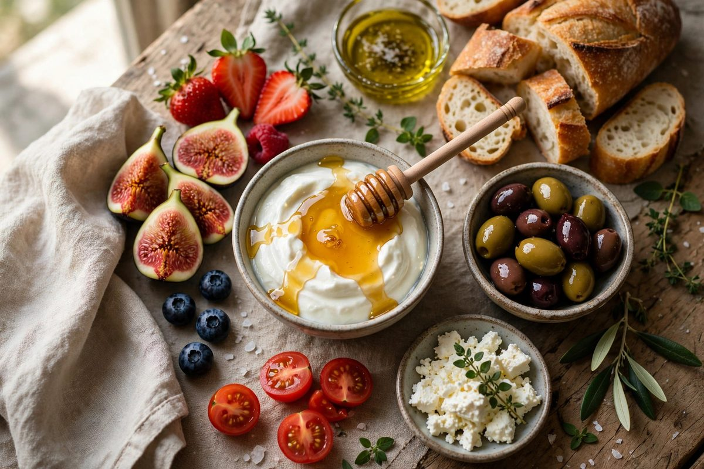

Home » Guides
Mediterranean Breakfast

Mediterranean breakfasts are simple, fresh, and unhurried. They are built from yoghurt, fruit, bread, eggs, and olive oil, and they are eaten slowly, often with family. This guide shares the classic breakfasts of Greece, Italy, and Spain, and shows how to bring them into your own morning routine.
Greek yoghurt and fruit
The most famous Mediterranean breakfast is Greek yoghurt with honey and walnuts. Thick, strained yoghurt is high in protein, and a drizzle of honey with a handful of nuts makes it satisfying and delicious. Add fresh fruit — figs, berries, or sliced peach — for sweetness and colour. This breakfast takes two minutes to assemble and keeps you full for hours. Choose full-fat yoghurt for the traditional taste and texture, and use honey sparingly, since it is still sugar. A variation is yoghurt with oats, seeds, and fruit, which adds fibre and staying power.
Bread, tomato, and olive oil
In Spain, the classic breakfast is pan con tomate: toasted bread rubbed with garlic and tomato, drizzled with olive oil, and sprinkled with salt. It is simple, fresh, and delicious, and it takes five minutes. In Italy, breakfast is often lighter — a piece of bread with jam, or a small pastry with coffee — but a savoury version with tomato and olive oil is common in the south. Wholegrain bread is the best choice, and a slice of cheese or a boiled egg on the side adds protein. This breakfast is a good example of the Mediterranean principle: a few good ingredients, prepared simply.
Eggs and savoury breakfasts
Eggs are a regular part of Mediterranean breakfasts. In Greece, eggs are often served with feta, tomato, and olives. In Spain, a tortilla — a thick potato and egg omelette — is eaten at any time of day, including breakfast. In Italy, a frittata with vegetables and cheese is a common morning dish. Serve eggs with bread, salad, and a drizzle of olive oil, and you have a complete breakfast. These dishes are easy to prepare the night before and reheat, which makes them practical for busy mornings.
A slower morning
The Mediterranean breakfast is not just about food — it is about how you eat it. Breakfast is taken sitting down, often with family, and it is not rushed. Coffee is sipped slowly, and the meal is a pause before the day begins. You do not need an hour to adopt this: even ten minutes at a table, without a phone, changes the feel of the morning. Prepare what you can the night before — slice fruit, set out the yoghurt, or make a frittata — so the morning itself is calm rather than chaotic.
Breakfast around the Mediterranean
Breakfast looks different in each Mediterranean country. In Greece, it is yoghurt with honey and nuts, or bread with cheese and olives. In Italy, it is a small pastry and coffee, eaten standing at a bar, though a savoury breakfast is common in the south. In Spain, it is toast with tomato and olive oil, or a tortilla with coffee. In southern France, it is bread with jam and a bowl of coffee. The common thread is simplicity: a few good ingredients, eaten slowly, with coffee. There is no single correct Mediterranean breakfast, and you can borrow from each country to build a breakfast that suits your taste and your morning.
Frequently Asked Questions
What is a typical Mediterranean breakfast?
Greek yoghurt with honey and walnuts, bread with tomato and olive oil, or eggs with feta and vegetables. All are simple, fresh, and based on a few good ingredients.
Is a Mediterranean breakfast filling?
Yes, if it includes protein and healthy fats. Yoghurt with nuts, or eggs with bread and olive oil, will keep you full until lunch.
Can I eat cereal on a Mediterranean diet?
Yes, if it is a wholegrain cereal such as oats or muesli. Sugary breakfast cereals are not part of the traditional pattern.